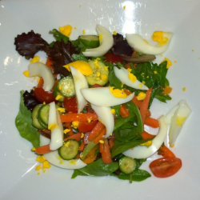
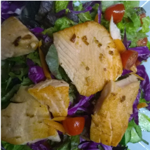

Pasta with Meatballs
Delicious and tasty Not your typical Italians meatballs and pastas. If you have no time to make fresh meatballs and pasta sauce use frozen kirkland meatballs and a can of crushed tomatoes. Dont forget to add italian seasonings, garlic and taste.
Fried Rice
Left over white rice and ground beef? Make ground beef with mixed vegetables fried rice.
Pasta and Meatsauce

Ground Beef? My 6yrs old love this dish. He helps me cook the pastas and watch me do the sauce.
Salad
Quick and easy Healthy salad for lunch on a busy day. It only take 20min to prepare.
Salmon and Mac & Cheese

Kids love mac and cheese, easy and fast to make. I got creative and add salmon to the dish.
Salmon with salad
Salmon with mixed greens, easy and fast to make. One of my favorite. I made my own dressing, lightly cook garlic, salt and olive oil.